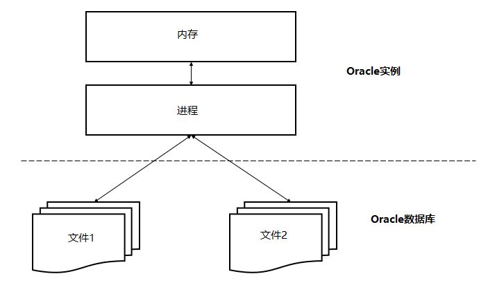

2019-11-12
1.oracle简介
1.1 ORACLE数据库系统是美国ORACLE公司（甲骨文）提供的以分布式数据库为核心的一组软件产品，是目前最流行的客户/服务器(CLIENT/SERVER)或B/S体系结构的数据库之一。
1.2.Oracle数据库是什么？
Oracle Database，又名Oracle RDBMS，简称Oracle。是甲骨文公司推出的一款关系数据库管理系统。
Oracle数据库系统是目前世界上流行的关系数据库管理系统，拥有可移植性好、使用方便、功能强等优点，在各类大、中、小、微机环境中都适用。Oracle是一种高效率、可靠性好的、适应高吞吐量的数据库解决方案
1.3.数据库和实例
Oracle数据库服务器由一个数据库和至少一个数据库实例组成。 数据库是一组存储数据的文件，而数据库实例则是管理数据库文件的内存结构。此外，数据库是由后台进程组成。
数据库和实例是紧密相连的，所以我们一般说的Oracle数据库，通常指的就是实例和数据库。
下图说明了Oracle数据库服务器体系结构：

在这种体系结构中，Oracle数据库服务器包括两个主要部分：文件(Oracle数据库)和内存(Oracle实例)。
1.4.物理存储结构
物理存储结构是存储数据的纯文件。当执行一个CREATE DATABASE语句来创建一个新的数据库时，将创建下列文件：
● 数据文件：数据文件包含真实数据，例如销售订单和客户等。逻辑数据库结构(如表和索引)的数据被物理存储在数据文件中。
● 控制文件：每个Oracle数据库都有一个包含元数据的控制文件。元数据用来描述包括数据库名称和数据文件位置的数据库物理结构。
● 联机重做日志文件：每个Oracle数据库都有一个联机重做日志，里面包含两个或多个联机重做日志文件。联机重做日志由重做条目组成，能够记录下所有对数据所做的更改。
除这些文件外，Oracle数据库还包括如参数文件、网络文件、备份文件以及用于备份和恢复的归档重做日志文件等重要文件。
1.5.逻辑存储结构
Oracle数据库使用逻辑存储结构对磁盘空间使用情况进行精细控制。以下是Oracle数据库中的逻辑存储结构：
● 数据块(Data blocks)：Oracle将数据存储在数据块中。数据块也被称为逻辑块，Oracle块或页，对应于磁盘上的字节数。
● 范围(Extents)：范围是用于存储特定类型信息的逻辑连续数据块的具体数量。
● 段(Segments)：段是分配用于存储用户对象(例如表或索引)的一组范围。
● 表空间(Tablespaces)：数据库被分成称为表空间的逻辑存储单元。 表空间是段的逻辑容器。 每个表空间至少包含一个数据文件。
下图说明了表空间中的段，范围和数据块：

下图显示了逻辑和物理存储结构之间的关系：

1.6.Oracle实例
Oracle实例是客户端应用程序(用户)和数据库之间的接口。Oracle实例由三个主要部分组成：系统全局区(SGA)，程序全局区(PGA)和后台进程。如下图所示 ：

SGA是实例启动时分配的共享内存结构，关闭时释放。 SGA是一组包含一个数据库实例的数据和控制信息的共享内存结构。
不同于所有进程都可用的SGA，PGA是会话开始时为每个会话分配的私有内存区，当会话结束时释放。
1.7.主要的Oracle数据库的后台进程
以下是Oracle实例的主要后台进程：
● PMON是Oracle数据库中最活跃的一个进程，是调节所有其他进程的进程监视器。PMON能够清理异常连接的数据库连接，并自动向侦听器进程注册数据库实例。
● SMON 是执行系统级清理操作的系统监视进程。它有两个主要职责，包括在发生故障的情况下自动恢复实例，例如断电和清理临时文件。
● DBWn 是数据库编写器。Oracle在内存中执行每个操作而不是磁盘。因为在内存中的处理速度比在磁盘上快。DBWn进程从磁盘读取数据并将其写回到磁盘。 一个Oracle实例有许多数据库编写器，如：DBW0，DBW1，DBW2等等。
● CKPT 是检查点过程。 在Oracle中，磁盘上的数据称为块，内存中的数据称为缓冲区。 当该块写入缓冲区并更改时，缓冲区变脏，需要将其写入磁盘。CKPT进程使用检查点信息更新控制和数据文件头，并向脏盘写入脏缓冲区的信号。 请注意，Oracle 12c允许全面和增量检查点。

● LGWR 是日志写入过程，是可恢复架构的关键。 在数据库中发生的每一个变化都被写出到一个名为redo日志文件中用于恢复目的。 而这些变化是由LGWR进程编写和记录的。 LGWR进程首先将更改写入内存，然后将磁盘写入重做日志，然后将其用于恢复。
● ARCn 是归档进程，它将重做日志的内容复制到归档重做日志文件。存档程序进程可以有多个进程，如：ARC0，ARC1和ARC3，允许存档程序写入多个目标，如D：驱动器，E：驱动器或其他存储。
● MMON 是收集性能指标的可管理性监控流程。
● MMAN 是自动管理Oracle数据库内存的内存管理器。
● LREG 是监听器注册过程，它使用Oracle Net Listener 在数据库实例和调度程序进程上注册信息。
2.oracle安装
oracle 11g安装
Oracle 11g安装教程
在本章节中，我们将为大家介绍如何下载Oracle 11g数据库，并且在Windows 10 64位电脑上进行安装演示。
Oracle 11g下载
首先，需要到Oracle官方网站下载Oracle数据库。
Oracle 11g官网下载地址：点击下载
下载的时候注意选对版本，因为我们是要在Windows 10 64位电脑上进行安装，所以选择Windows X64的版本，如下图：

Oracle 11g安装步骤
Oracle 11g下载完成后，解压到一个空的文件夹，然后双击setup.exe文件，就可以开始安装Oracle数据库了。

第1步：
在此步骤中，可以提供您的电子邮件，以获取有关Oracle安全问题的更新信息。但为了方便，这里我们不提供电子邮件。

确认不提供电子邮件，点击 【是(Y)】继续。

第2步：
此步骤中有三个选项，如下图所示。选择第一个【创建和配置数据库】，然后单击【下一步】按钮。

第3步：
如果要在笔记本电脑或桌面上安装Oracle数据库，请选择第一个选项【桌面类】，否则选择第二个选项，然后单击【下一步】按钮。

第4步：
此步骤允许要求输入完整的数据库安装文件夹。可以更改Oracle基本文件夹，其他文件夹将相应更改。填写上管理员密码，之后单击【下一步】按钮进入下一步。

第5步：
在此步骤中，Oracle将在安装Oracle数据库组件之前执行先决条件检查。

第6步：
此步骤将显示上一步骤检查的摘要信息，单击【完成】按钮开始安装Oracle数据库。

第7步：
此步骤将文件复制到相应的文件夹并安装Oracle组件和服务。完成所需的时间需要几分钟，请耐心等待

完成后，安装程序将显示“数据库配置助理”对话框

单击【口令管理】按钮设置不同用户的密码，这里我们将SYS，SYSTEM和HR用户解锁并设置相应的密码 ，完成后，点击【确定】。

第8步：
安装过程完成后，单击【关闭】按钮来关闭安装程序。到此，Oracle 11g已经成功安装好了。

验证安装情况
如果上面安装步骤正常通过，在【开始】->【所有应用】将看到Oracle文件夹如下：

首先，启动SQL Plus，它是一个可用于与Oracle数据库交互的命令行界面工具。
然后，输入您在安装过程中设置的用户名和密码，我们使用HR用户登录，所以这里输入HR用户及其相应的密码。

输入以下语句：
SELECT * FROM dual;
如果能看到输出如下面的屏幕截图所示，那么说明您已经成功安装了Oracle数据库。

至此，Oracle数据库就正式安装完毕了。在安装过程中，如果没有完全成功，请仔细查看每个步骤，并在必要时进行适当的更正。
oracle 12c安装
Oracle 12c，全称Oracle Database 12c，是Oracle 11g的升级版，新增了很多新的特性。本章节就为大家介绍Oracle 12c的下载和安装步骤。
Oracle 12c下载
打开Oracle的官方中文网站，选择相应的版本即可。
注意：下载时，根据电脑系统选择相应的版本，如下图，因为我用的是WIN 10 64位系统，因此选择第一个下载。

将下载下来的压缩包解压，得到以下文件：

双击setup.exe文件，就可以进行安装了。
Oracle 12c安装步骤
第1步：
安装程序要求提供您的电子邮件地址以获取最新的安全问题和更新。您可以单击下一步按钮跳过。

第2步
在这一步中，Oracle安装程序会询问您是要创建和配置数据库，仅安装数据库软件还是仅升级现有数据库。因为首次安装Oracle数据库，请选择第一个选项(Create and configure a database)，然后单击下一步按钮。

第3步
安装程序允许您选择系统类型。因为我们是在桌面计算机上安装Oracle，而不是服务器，因此，这里选择第一个选项：桌面类(Desktop class)，然后单击下一步按钮。

第4步
在这一步骤中，允许指定要安装和配置Oracle Home以增强安全性的Windows用户帐户。选择第三个选项：“使用Windows内置帐户(Use Windows Built-in Account)”。

第5步
在此步骤中，选择要安装Oracle数据库的文件夹，全局数据库名称和密码，可插拔数据库名称。

第6步
安装程序执行前提条件检查。

第7步
安装程序会显示信息的摘要，例如全局设置，数据库信息等。如果一切正常，可查看信息并单击安装按钮。

确认安装？

即将要安装的信息概述 ：

第8步
安装程序开始安装Oracle数据库。安装速度取决于您的计算机性能，需要几分钟的时间才能完成。


第9步
安装成功完成后，安装程序会通知提示安装完成，如下面截图所示。单击关闭按钮关闭窗口。

连接到Oracle数据库
第一步，启动由Oracle数据库提供的SQL developer应用程序。

第二步，右键单击连接节点，然后选择“新建连接…(New Connection …)”菜单项以创建 新连接。

第三步，输入您在安装过程中提供的信息，如以下屏幕截图所示。单击连接按钮连接到Oracle数据库。

SQL developer将显示所有对象，如下所示：

至此，恭喜，您已成功安装Oracle数据库12c了。
3.常用语句
①查看所有表名
SELECT table_name FROM user_tables ORDER BY Table_name;
②to_char
Oracle AND算符实例
以以下数据库中的订单(orders)表为例：

Oracle AND结合两个布尔表达式的例子
以下示例查找具有客户编号为2的那些状态为挂起(Pending)的订单：
SELECT order_id, customer_id, status, TO_CHAR(order_date,'YYYY-MM-DD') AS order_date
FROM orders
WHERE status = 'Pending' AND customer_id = 2 ORDER BY order_date;
在这个例子中，查询返回了满足两个表达式的所有订单信息，即：
status = 'Pending'
和
customer_id = 2
执行上面的代码可以得到以下结果：

SELECT
order_id,
customer_id,
status,
TO_CHAR(order_date, 'YYYY-MM-DD') AS order_date
FROM
orders
WHERE
status = 'Shipped'
AND salesman_id = 60
AND EXTRACT(YEAR FROM order_date) = 2017
ORDER BY
order_date;
Oracle to_char函数的功能是将数值型或者日期型转化为字符型，下面就为您详细介绍Oracle to_char函数的使用，希望对您能有所帮助。
Postgres 格式化函数提供一套有效的工具用于把各种数据类型（日期/时间，int，float，numeric）转换成格式化的字符串以及反过来从格式化的字符串转换成原始的数据类型。
注意：所有格式化函数的第二个参数是用于转换的模板。
表 5-7. 格式化函数
函数 | 返回 | 描述 | 例子 |
to_char(timestamp, text) | text | 把 timestamp 转换成 string | to_char(timestamp 'now','HH12:MI:SS') |
to_char(int, text) | text | 把 int4/int8 转换成 string | to_char(125, '999') |
to_char(float, text) | text | 把 float4/float8 转换成 string | to_char(125.8, '999D9') |
to_char(numeric, text) | text | 把 numeric 转换成 string | to_char(numeric '-125.8', '999D99S') |
to_date(text, text) | date | 把 string 转换成 date | to_date('05 Dec 2000', 'DD Mon YYYY') |
to_timestamp(text, text) | date | 把 string 转换成 timestamp | to_timestamp('05 Dec 2000', 'DD Mon YYYY') |
to_number(text, text) | numeric | 把 string 转换成 numeric | to_number('12,454.8-', '99G999D9S') |
表 5-8. 用于 date/time 转换的模板
模板 | 描述 |
HH | 一天的小时数 (01-12) |
HH12 | 一天的小时数 (01-12) |
HH24 | 一天的小时数 (00-23) |
MI | 分钟 (00-59) |
SS | 秒 (00-59) |
SSSS | 午夜后的秒 (0-86399) |
AM or A.M. or PM or P.M. | 正午标识（大写） |
am or a.m. or pm or p.m. | 正午标识（小写） |
Y,YYY | 带逗号的年（4 和更多位） |
YYYY | 年（4和更多位） |
YYY | 年的后三位 |
YY | 年的后两位 |
Y | 年的最后一位 |
BC or B.C. or AD or A.D. | 年标识（大写） |
bc or b.c. or ad or a.d. | 年标识（小写） |
MONTH | 全长大写月份名（9字符） |
Month | 全长混合大小写月份名（9字符） |
month | 全长小写月份名（9字符） |
MON | 大写缩写月份名（3字符） |
Mon | 缩写混合大小写月份名（3字符） |
mon | 小写缩写月份名（3字符） |
MM | 月份 (01-12) |
DAY | 全长大写日期名（9字符） |
Day | 全长混合大小写日期名（9字符） |
day | 全长小写日期名（9字符） |
DY | 缩写大写日期名（3字符） |
Dy | 缩写混合大小写日期名（3字符） |
dy | 缩写小写日期名（3字符） |
DDD | 一年里的日子(001-366) |
DD | 一个月里的日子(01-31) |
D | 一周里的日子(1-7；SUN=1) |
W | 一个月里的周数 |
WW | 一年里的周数 |
CC | 世纪（2 位） |
J | Julian 日期（自公元前4712年1月1日来的日期） |
Q | 季度 |
RM | 罗马数字的月份（I-XII；I=JAN）－大写 |
rm | 罗马数字的月份（I-XII；I=JAN）－小写 |
所有模板都都允许使用前缀和后缀修改器。模板里总是允许使用修改器。前缀 'FX' 只是一个全局修改器。
表 5-9. 用于日期/时间模板 to_char() 的后缀
后缀 | 描述 | 例子 |
FM | 填充模式前缀 | FMMonth |
TH | 大写顺序数后缀 | DDTH |
th | 小写顺序数后缀 | DDTH |
FX | 固定模式全局选项（见下面） | FX Month DD Day |
SP | 拼写模式（还未实现） | DDSP |
用法须知：
如果没有使用 FX 选项，to_timestamp 和 to_date 忽略空白。FX 必须做为模板里的第一个条目声明。
反斜杠（"\"）必须用做双反斜杠（"\\"），例如 '\\HH\\MI\\SS'。
双引号（'"'）之间的字串被忽略并且不被分析。如果你想向输出写双引号，你必须在双引号前面放置一个双反斜杠（'\\'），例如 '\\"YYYY Month\\"'。
to_char 支持不带前导双引号（'"'）的文本，但是在双引号之间的任何字串会被迅速处理并且还保证不会被当作模板关键字解释（例如：'"Hello Year: "YYYY'）。
表 5-10. 用于 to_char(numeric) 的模板
模板 | 描述 |
9 | 带有指定位数的值 |
0 | 前导零的值 |
. （句点） | 小数点 |
, （逗号） | 分组（千）分隔符 |
PR | 尖括号内负值 |
S | 带负号的负值（使用本地化） |
L | 货币符号（使用本地化） |
D | 小数点（使用本地化） |
G | 分组分隔符（使用本地化） |
MI | 在指明的位置的负号（如果数字 < 0） |
PL | 在指明的位置的正号（如果数字 > 0） |
SG | 在指明的位置的正/负号 |
RN | 罗马数字（输入在 1 和 3999 之间） |
TH or th | 转换成序数 |
V | 移动 n 位（小数）（参阅注解） |
EEEE | 科学记数。现在不支持。 |
用法须知：
使用 'SG'，'PL' 或 'MI' 的带符号字并不附着在数字上面；例如，to_char(-12, 'S9999') 生成 ' -12'，而 to_char(-12, 'MI9999') 生成 '- 12'。Oracle 里的实现不允许在 9 前面使用 MI，而是要求 9 在 MI前面。
PL，SG，和 TH 是 Postgres 扩展。
9 表明一个与在 9 字串里面的一样的数字位数。如果没有可用的数字，那么使用一个空白（空格）。
TH 不转换小于零的值，也不转换小数。TH 是一个 Postgres 扩展。
V 方便地把输入值乘以 10^n，这里 n 是跟在 V 后面的数字。to_char 不支持把 V 与一个小数点绑在一起使用（例如. "99.9V99" 是不允许的）。
表 5-11. to_char 例子
输入 | 输出 |
to_char(now(),'Day, HH12:MI:SS') | 'Tuesday , 05:39:18' |
to_char(now(),'FMDay, HH12:MI:SS') | 'Tuesday, 05:39:18' |
to_char(-0.1,'99.99') | ' -.10' |
to_char(-0.1,'FM9.99') | '-.1' |
to_char(0.1,'0.9') | ' 0.1' |
to_char(12,'9990999.9') | ' 0012.0' |
to_char(12,'FM9990999.9') | '0012' |
to_char(485,'999') | ' 485' |
to_char(-485,'999') | '-485' |
to_char(485,'9 9 9') | ' 4 8 5' |
to_char(1485,'9,999') | ' 1,485' |
to_char(1485,'9G999') | ' 1 485' |
to_char(148.5,'999.999') | ' 148.500' |
to_char(148.5,'999D999') | ' 148,500' |
to_char(3148.5,'9G999D999') | ' 3 148,500' |
to_char(-485,'999S') | '485-' |
to_char(-485,'999MI') | '485-' |
to_char(485,'999MI') | '485' |
to_char(485,'PL999') | '+485' |
to_char(485,'SG999') | '+485' |
to_char(-485,'SG999') | '-485' |
to_char(-485,'9SG99') | '4-85' |
to_char(-485,'999PR') | '<485>' |
to_char(485,'L999') | 'DM 485 |
to_char(485,'RN') | ' CDLXXXV' |
to_char(485,'FMRN') | 'CDLXXXV' |
to_char(5.2,'FMRN') | V |
to_char(482,'999th') | ' 482nd' |
to_char(485, '"Good number:"999') | 'Good number: 485' |
to_char(485.8,'"Pre-decimal:"999" Post-decimal:" .999') | 'Pre-decimal: 485 Post-decimal: .800' |
to_char(12,'99V999') | ' 12000' |
to_char(12.4,'99V999') | ' 12400' |
to_char(12.45, '99V9') | ' 125' |
自然连接是在两张表中寻找那些数据类型和列名都相同的字段，然后自动地将他们连接起来，并返回所有符合条件按的结果。
来看一下自然连接的例子。
Select emp.ename,dept.dname
From emp natural join dept;
这里我们并没有指定连接的条件，实际上oracle为我们自作主张的将，emp中的deptno和dept中的deptno做了连接。
也就是实际上相当于
Select emp.ename,dept.dname
From emp join dept on emp.deptno = dept.deptno;
因为这两张表的这两个字段deptno的类型个名称完全相同。所以使用natural join时被自然的连接在一起了。
另外：
1.如果做自然连接的两个表的有多个字段都满足有相同名称个类型，那么他们会被作为自然连接的条件。
2.如果自然连接的两个表仅是字段名称相同，但数据类型不同，那么将会返回一个错误。
3.由于oracle中可以进行这种非常简单的natural join，我们在设计表时，应该尽量在不同表中具有相同含义的字段使用相同的名字和数据类型。以方便以后使用natural join。
⑤using,fetch
-- 以下查询语句仅能在Oracle 12c以上版本执行
SELECT
product_name, quantity
FROM inventories
INNER JOIN products
USING(product_id)
ORDER BY quantity DESC
FETCH NEXT 5 ROWS ONLY;
⑥between and
SELECT
order_id,
customer_id,
status,
order_date
FROM orders
WHERE order_date
BETWEEN DATE '2016-12-01' AND DATE '2016-12-31' ORDER BY order_date;
like子句